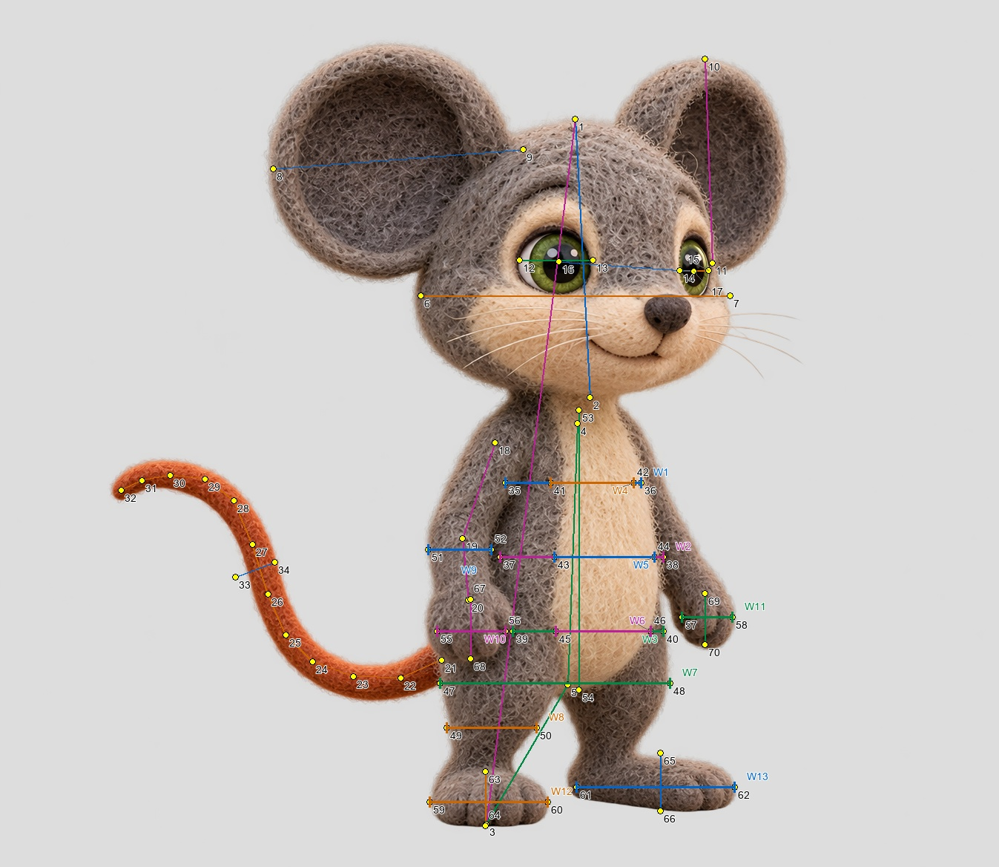
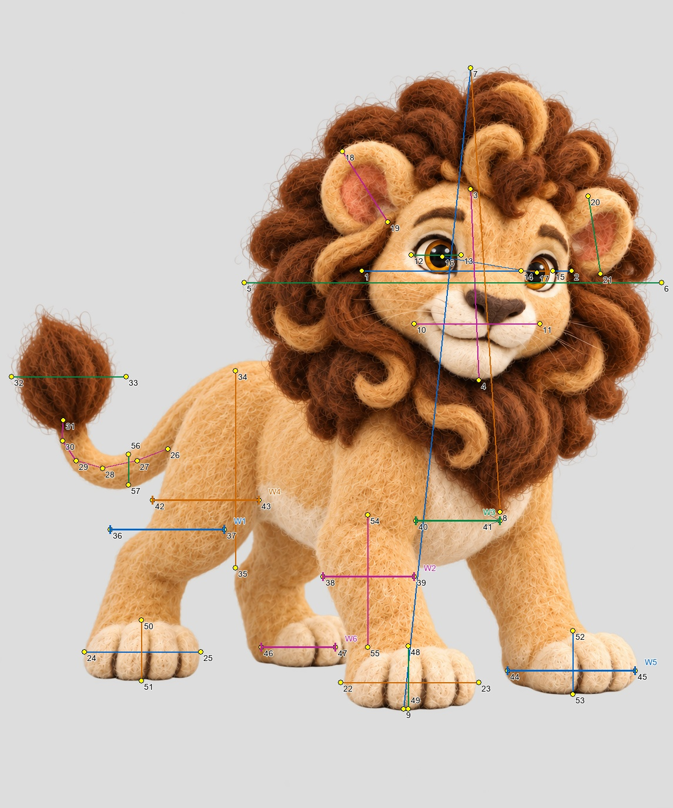

Manual native-image annotations with uncertainty. Surface proxies are identified; hidden joints remain unmeasured. No source image edits or new generation. Leo actual-byte observations do not resolve his canonical approval mismatch.
canonical_bytes_match
Actual image SHA-256: c0d500c1a9644eed94b121d1e3205654901ac414fb07723c4a8f7996cdc8ae3f
One diagram contains all previous and new measurements. Numbered dots identify native-pixel landmarks; W labels identify horizontal spans, including paws. Body, cream patch, closed hands and feet remain separate. No hidden circumference or joint inferred.

| Ratio | Baseline | Interval | Visible quantities |
|---|---|---|---|
| projected_head_fraction | 0.39 | 0.37–0.42 | head_height / standing_height |
| head_to_torso | 1.06 | 0.93–1.22 | head_height / torso |
| ear_to_skull | 0.81 | 0.72–0.91 | near_ear / skull_width |
| far_ear_to_skull | 0.66 | 0.57–0.76 | far_ear / skull_width |
| eye_to_skull | 0.24 | 0.20–0.28 | near_eye_width / skull_width |
| far_eye_to_skull | 0.09 | 0.07–0.12 | far_eye_width / skull_width |
| eye_spacing_to_skull | 0.44 | 0.40–0.48 | eye_spacing / skull_width |
| visible_arm_path_to_torso | 0.62 | 0.39–0.90 | visible_arm_path / torso |
| torso_to_visible_standing_leg_height | 1.87 | 1.51–2.33 | torso / visible_leg_height |
| tail_arc_to_torso | 1.68 | 1.07–2.42 | visible_tail_arc / torso |
| tail_thickness_to_torso | 0.16 | 0.11–0.23 | tail_thickness / torso |
| upper_torso_panel_to_head_width | 0.44 | 0.36–0.53 | upper_torso_visible_panel_width / skull_width |
| belly_panel_to_head_width | 0.53 | 0.44–0.62 | belly_visible_panel_width / skull_width |
| lower_belly_panel_to_head_width | 0.49 | 0.39–0.59 | lower_belly_visible_panel_width / skull_width |
| belly_panel_to_torso_height | 0.62 | 0.51–0.76 | belly_visible_panel_width / torso |
| belly_panel_to_head_height | 0.59 | 0.50–0.68 | belly_visible_panel_width / head_height |
| lower_to_upper_torso_panel_width | 1.11 | 0.84–1.47 | lower_belly_visible_panel_width / upper_torso_visible_panel_width |
| pelvis_band_to_head_width | 0.74 | 0.64–0.86 | lower_body_pelvis_band_span / skull_width |
| near_thigh_band_to_head_width | 0.29 | 0.22–0.37 | near_thigh_surface_band_width / skull_width |
| near_thigh_band_to_pelvis_band | 0.39 | 0.29–0.51 | near_thigh_surface_band_width / lower_body_pelvis_band_span |
| near_arm_band_to_head_width | 0.20 | 0.14–0.28 | near_arm_surface_band_width / skull_width |
| cream_upper_to_torso_panel_width | 0.61 | 0.45–0.82 | cream_patch_upper_width / upper_torso_visible_panel_width |
| cream_belly_to_torso_panel_width | 0.61 | 0.48–0.78 | cream_patch_belly_width / belly_visible_panel_width |
| cream_lower_to_torso_panel_width | 0.63 | 0.46–0.86 | cream_patch_lower_width / lower_belly_visible_panel_width |
| cream_patch_width_to_height | 0.36 | 0.29–0.43 | cream_patch_belly_width / cream_patch_height |
| cream_patch_height_to_torso_height | 1.07 | 0.92–1.26 | cream_patch_height / torso |
| pelvis_band_to_belly_panel_width | 1.41 | 1.16–1.72 | lower_body_pelvis_band_span / belly_visible_panel_width |
| near_closed_hand_to_head_width | 0.22 | 0.17–0.28 | near_closed_hand_span / skull_width |
| far_closed_hand_to_head_width | 0.16 | 0.11–0.22 | far_closed_hand_span / skull_width |
| near_foot_front_span_to_head_width | 0.38 | 0.32–0.45 | near_foot_front_view_span / skull_width |
| far_foot_side_span_to_head_width | 0.51 | 0.44–0.59 | far_foot_side_view_span / skull_width |
| near_foot_projected_aspect | 2.18 | 1.58–3.11 | near_foot_front_view_span / near_foot_visible_height |
| far_foot_projected_aspect | 2.73 | 2.05–3.76 | far_foot_side_view_span / far_foot_visible_height |
| near_closed_hand_height_to_head_height | 0.21 | 0.15–0.28 | near_closed_hand_visible_height / head_height |
| near_foot_span_to_pelvis_band | 0.51 | 0.42–0.63 | near_foot_front_view_span / lower_body_pelvis_band_span |
| near_closed_hand_to_arm_band | 1.08 | 0.68–1.80 | near_closed_hand_span / near_arm_surface_band_width |
| Quantity | Pixels ± uncertainty | Scope |
|---|---|---|
| head_height | 375.0 ±16.0 | ears excluded |
| standing_height | 950.0 ±13.0 | |
| torso | 352.2 ±33.0 | visible surface-axis proxy; internal neck/pelvis joints not visible |
| skull_width | 417.0 ±24.0 | visible horizontal head outline, excludes ears/whiskers |
| near_ear | 338.0 ±20.0 | |
| far_ear | 275.2 ±24.0 | |
| near_eye_width | 99.0 ±10.0 | |
| far_eye_width | 39.0 ±10.0 | |
| eye_spacing | 182.5 ±8.0 | |
| visible_arm_path | 219.7 ±69.0 | surface centerline proxy only; elbow not identified |
| visible_leg_height | 188.0 ±23.0 | standing surface proxy; not hip-knee-ankle chain |
| visible_tail_arc | 593.2 ±180.0 | visible shaft centerline only; root under body not reconstructed |
| tail_thickness | 56.6 ±16.0 | |
| upper_torso_visible_panel_width | 183.0 ±24.0 | Visible central torso panel between arm/body seams; NOT complete chest silhouette or hidden shoulder breadth. |
| belly_visible_panel_width | 220.0 ±24.0 | Mid-belly panel from near arm/body seam to far torso/arm boundary; hanging arms excluded; full hidden back contour unavailable. |
| lower_belly_visible_panel_width | 203.0 ±30.0 | Lower visible torso panel; near hand obscures true outer contour. This is a partial surface span, not full belly girth. |
| cream_patch_upper_width | 112.0 ±18.0 | Cream-to-grey material transition at upper torso band; exclude adjacent grey arms and loose fibres. |
| cream_patch_belly_width | 135.0 ±18.0 | Cream-to-grey material transition at mid-belly band; colour/material boundary, not body outline. |
| cream_patch_lower_width | 128.0 ±20.0 | Cream-to-grey material transition at lower belly band; invalid if hands or props occlude either edge. |
| lower_body_pelvis_band_span | 310.0 ±28.0 | Combined lower-body outline at pelvis surface band, including upper-leg silhouette in this stance; NOT skeletal hip breadth. |
| near_thigh_surface_band_width | 121.0 ±24.0 | Visible screen-left near upper-leg surface below crotch; horizontal section, not bone diameter or joint-to-joint length. |
| near_arm_surface_band_width | 85.0 ±24.0 | Near hanging arm from outer outline to torso seam; arm thickness separate from torso panel. |
| cream_patch_height | 377.0 ±24.0 | Visible cream chest/belly patch height; body part and material landmark, not torso skeletal length. |
| near_closed_hand_span | 92.0 ±18.0 | Near screen-left CLOSED hand silhouette; not open palm width or usable grip capacity. |
| far_closed_hand_span | 68.0 ±18.0 | Far screen-right CLOSED hand silhouette; perspective differs from near hand. |
| near_foot_front_view_span | 159.0 ±18.0 | Near supporting foot in near-front projection; outside felt toe outline, loose fibres excluded. |
| far_foot_side_view_span | 213.0 ±20.0 | Far foot heel-to-toe span in more side-on projection; NOT homologous frontal paw breadth. |
| near_foot_visible_height | 73.0 ±16.0 | Visible near foot top-to-sole surface height; not hidden ankle-to-toe anatomy. |
| far_foot_visible_height | 78.0 ±16.0 | Visible far foot top-to-sole height in side projection. |
| near_closed_hand_visible_height | 80.0 ±20.0 | Closed near hand visible wrist transition to fingertip outline; transition is a surface proxy. |
| far_closed_hand_visible_height | 69.0 ±20.0 | Closed far hand visible height; preserve angle and wrist articulation. |
canonical_bytes_match_owner_reconciliation
Actual image SHA-256: 1c4f773d04c5e6f7229448bfe00caf7f610d427f5dc0d145cba57e7671a59362
One diagram contains all previous and new measurements. Numbered dots identify native-pixel landmarks; W labels identify horizontal spans, including paws. Body, cream patch, closed hands and feet remain separate. No hidden circumference or joint inferred.

| Ratio | Baseline | Interval | Visible quantities |
|---|---|---|---|
| mane_to_visible_face_width | 1.99 | 1.78–2.22 | mane_width / visible_face_width |
| mane_height_to_visible_face_height | 2.32 | 2.07–2.62 | mane_height / visible_face_height |
| muzzle_to_visible_face_width | 0.60 | 0.51–0.70 | muzzle_width / visible_face_width |
| near_eye_to_visible_face_width | 0.24 | 0.20–0.29 | near_eye_width / visible_face_width |
| far_eye_to_visible_face_width | 0.15 | 0.12–0.19 | far_eye_width / visible_face_width |
| eye_spacing_to_visible_face_width | 0.46 | 0.41–0.51 | eye_spacing / visible_face_width |
| near_ear_to_visible_face_width | 0.40 | 0.32–0.49 | near_ear / visible_face_width |
| far_ear_to_visible_face_width | 0.37 | 0.30–0.46 | far_ear / visible_face_width |
| near_forepaw_to_visible_face_width | 0.66 | 0.56–0.77 | near_forepaw_width / visible_face_width |
| near_hindpaw_to_visible_face_width | 0.55 | 0.47–0.65 | near_hindpaw_width / visible_face_width |
| visible_tail_shaft_to_face_width | 0.67 | 0.35–1.03 | visible_tail_shaft / visible_face_width |
| tail_tuft_to_visible_face_width | 0.55 | 0.45–0.66 | tuft_width / visible_face_width |
| visible_flank_to_face_width | 0.94 | 0.77–1.13 | visible_flank_height / visible_face_width |
| mane_height_to_standing_silhouette | 0.69 | 0.65–0.73 | mane_height / standing_silhouette_height |
| near_hind_thigh_to_visible_face_width | 0.54 | 0.41–0.69 | near_hind_thigh_surface_width / visible_face_width |
| near_foreleg_to_visible_face_width | 0.43 | 0.33–0.55 | near_foreleg_surface_width / visible_face_width |
| near_hind_thigh_to_hindpaw_width | 0.98 | 0.72–1.29 | near_hind_thigh_surface_width / near_hindpaw_width |
| visible_cream_chest_to_face_width | 0.40 | 0.28–0.54 | visible_cream_chest_patch_span / visible_face_width |
| visible_hindquarter_panel_to_face_width | 0.51 | 0.38–0.65 | visible_hindquarter_panel_span / visible_face_width |
| far_forepaw_to_visible_face_width | 0.61 | 0.51–0.72 | far_forepaw_visible_span / visible_face_width |
| exposed_far_hindpaw_to_face_width | 0.35 | 0.26–0.46 | far_hindpaw_exposed_span / visible_face_width |
| near_forepaw_projected_aspect | 2.20 | 1.69–2.93 | near_forepaw_width / near_forepaw_visible_height |
| near_hindpaw_projected_aspect | 1.92 | 1.45–2.63 | near_hindpaw_width / near_hindpaw_visible_height |
| far_forepaw_projected_aspect | 2.01 | 1.51–2.74 | far_forepaw_visible_span / far_forepaw_visible_height |
| near_forepaw_to_hindpaw_span | 1.19 | 0.99–1.43 | near_forepaw_width / near_hindpaw_width |
| exposed_foreleg_to_visible_face_height | 0.69 | 0.54–0.87 | near_foreleg_exposed_height / visible_face_height |
| mane_width_to_near_forepaw | 3.02 | 2.67–3.44 | mane_width / near_forepaw_width |
| visible_tail_thickness_to_face_width | 0.15 | 0.08–0.22 | visible_tail_shaft_thickness / visible_face_width |
| near_foreleg_to_forepaw_width | 0.66 | 0.50–0.85 | near_foreleg_surface_width / near_forepaw_width |
| Quantity | Pixels ± uncertainty | Scope |
|---|---|---|
| visible_face_width | 357.0 ±24.0 | visible face mask, NOT hidden skull width |
| visible_face_height | 325.0 ±25.0 | visible forehead starts below forelock; not true skull crown |
| mane_width | 710.0 ±30.0 | |
| mane_height | 755.0 ±30.0 | |
| standing_silhouette_height | 1090.0 ±20.0 | includes mane; Leo-specific visible silhouette |
| muzzle_width | 214.0 ±20.0 | |
| near_eye_width | 85.0 ±10.0 | |
| far_eye_width | 54.0 ±10.0 | |
| eye_spacing | 163.2 ±8.0 | |
| near_ear | 142.6 ±20.0 | |
| far_ear | 133.7 ±20.0 | |
| near_forepaw_width | 235.0 ±20.0 | |
| near_hindpaw_width | 198.0 ±20.0 | |
| visible_tail_shaft | 239.0 ±104.0 | visible shaft only, excludes hidden root and tuft interior |
| tuft_width | 195.0 ±24.0 | |
| visible_flank_height | 335.0 ±40.0 | surface thickness at x=400 only, not trunk axis |
| near_hind_thigh_surface_width | 194.0 ±36.0 | Visible near hindquarter/thigh horizontal surface section; stance-dependent, not skeletal hip width. |
| near_foreleg_surface_width | 155.0 ±28.0 | Near foreleg shaft outline below mane; excludes other leg, paw and cream chest patch. |
| visible_cream_chest_patch_span | 143.0 ±36.0 | Only exposed cream chest patch between near foreleg and far chest/mane boundary; NOT full chest or full patch width. |
| visible_hindquarter_panel_span | 181.0 ±36.0 | Visible near hindquarter panel from outer rump outline to cream/flank transition; not cross-body girth. |
| far_forepaw_visible_span | 217.0 ±24.0 | Far forepaw visible outline in this standing projection; compare only with the same far paw and load. |
| far_hindpaw_exposed_span | 126.0 ±28.0 | EXPOSED PART of far hindpaw; near foreleg hides remainder. Not full paw breadth. |
| near_forepaw_visible_height | 107.0 ±20.0 | Near forepaw visible top-to-ground surface height; not hidden wrist or toe bone length. |
| near_hindpaw_visible_height | 103.0 ±20.0 | Near hindpaw visible top-to-ground surface height in standing support. |
| far_forepaw_visible_height | 108.0 ±20.0 | Far forepaw visible top-to-ground surface height; perspective differs from near paw. |
| near_foreleg_exposed_height | 225.0 ±36.0 | Exposed foreleg surface below mane to paw transition; not shoulder-elbow-wrist anatomy. |
| visible_tail_shaft_thickness | 52.0 ±20.0 | Projected shaft thickness at this visible tail segment; excludes tuft, loose fibres and hidden root. |